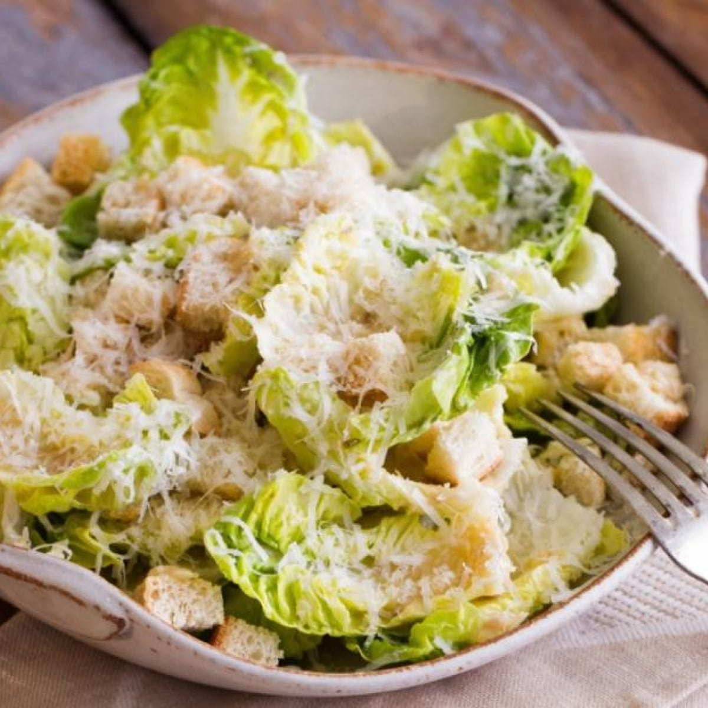

Salada Caesar

Esse clássico da culinária, servido geralmente como uma entrada caprichada.
Ingredientes:
- 2 xícaras (chá) de pão amanhecido cortado em cubos de 1 cm
- 2 colheres (sopa) de azeite
- sal a gosto
Modo de Fazer:
- Leve uma frigideira antiaderente ao fogo médio. Quando aquecer, regue com 2 colheres (sopa) de azeite e acrescente os cubos de pão. Tempere com sal e mantenha em fogo médio por cerca de 5 minutos, mexendo de vez em quando, até dourar.
- Transfira os croutons para uma travessa e deixe esfriar completamente antes de armazenar ou servir – eles ficam mais crocantes depois de frios.
- Leve para um prato, e se quiser, adicione queijo e frango desfiado.